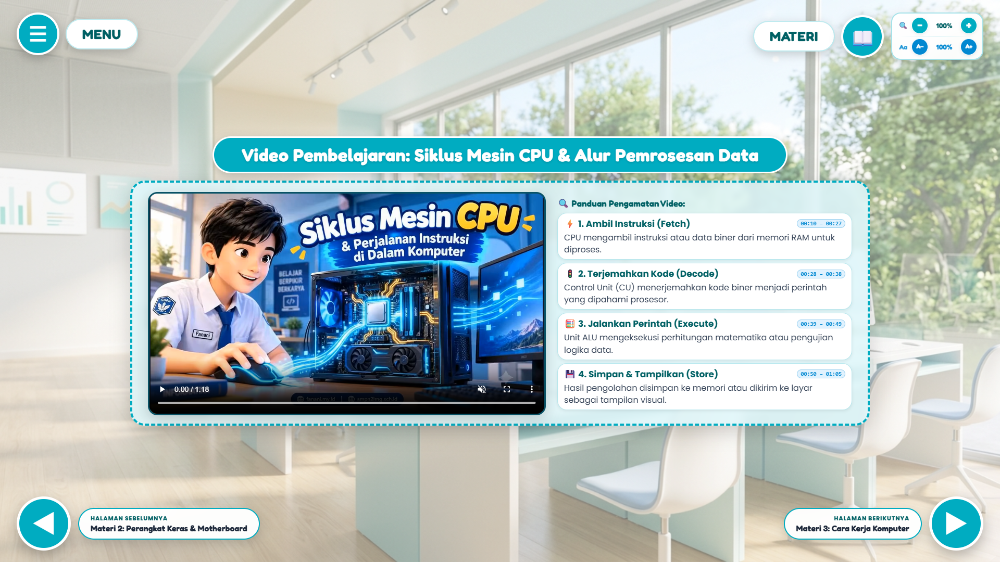
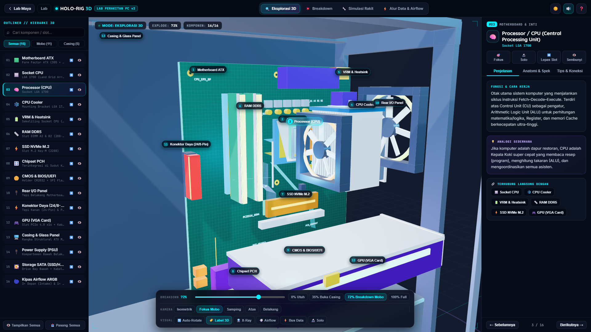

Situasi
Tantangan
Aksi
Refleksi & Dampak
Guru Kreatif SMP/MTs
Kombinasi Multi-AI
MPI + Lab Maya v1 & v2
Menyelam ke Dalam Mesin Digital
Mengombinasikan berbagai kecerdasan artifisial untuk mewujudkan MPI Sistem Komputer dan Laboratorium Maya yang visual, interaktif, dan terus bertumbuh.

Ach. Chanifuddin Fanani, S.Pd.
Guru Informatika · SMP Negeri 2 Lamongan, Jawa Timur


2 Karya Lomba + Evolusi 3DMPI Sistem Komputer & Lab Maya
Imbas 160 Guru SMPSe-Kabupaten Lamongan
S · Situasi
Tugas pertama guru adalah mengenali muridnya
Pengamatan Langsung di Kelas IX · SMPN 2 Lamongan
“Saat saya mengenali cara belajar murid SMP, mereka ternyata bukan tidak mampu — mereka hanya kesulitan membayangkan materi Sistem Komputer yang abstrak tanpa gambaran visual yang konkret.”
 Praktik nyata kelas IX: 1 PC terbuka untuk 35 murid
Praktik nyata kelas IX: 1 PC terbuka untuk 35 murid
Konkret → Abstrak
Murid SMP belum terbiasa membayangkan siklus Fetch–Decode–Execute CPU, arus biner, dan alur kerja motherboard hanya dari ceramah atau buku teks.
1 : 35
Hanya 1 unit PC terbuka untuk 35 murid. Mereka takut salah colok, takut merusak komponen fisik, sehingga belajar menjadi pasif.
58,40
Rata-rata asesmen awal kelas 9A. Hanya 13 dari 35 murid (37,1%) yang tuntas karena terjebak menghafal istilah tanpa paham konsep.
R · Refleksi Hasil & Dampak (2/3) · Pengakuan & Pengimbasan
Dipercaya sesama guru TI, difasilitasi sharing se-Kab. Lamongan
160
Guru SMP Negeri & Swasta
se-Kabupaten Lamongan mengikuti sesi sharing & praktik langsung
se-Kabupaten Lamongan mengikuti sesi sharing & praktik langsung
Approved oleh Guru-Guru TI Lain: Rekan guru Informatika di sekolah (pengampu 9I–9J) dan komunitas MGMP Informatika ikut mengadopsi media ini karena terbukti menyelesaikan masalah konkret pembelajaran sistem komputer.
Difasilitasi Dinas Pendidikan Kab. Lamongan: Dipercaya menjadi narasumber Sosialisasi Pembelajaran Mendalam serta Koding & KA (15 September 2026) untuk membekali guru SMP negeri dan swasta membuat media visual berbasis AI.
Terbuka & Siap Direplikasi Nasional: Seluruh media dan kode sumbernya dibuka gratis di fanani.my.id/lab dan GitHub.
 Sharing ke 160 Guru SMP Negeri & Swasta se-Kab. Lamongan
Sharing ke 160 Guru SMP Negeri & Swasta se-Kab. Lamongan
★ Narasumber Dinas Pendidikan Kab. Lamongan
Berbagi Cara Pembuatan Media Interaktif via Vibe Coding (15 Sep 2026)
Approved MGMP TI
Penutup
Tugas pertama guru adalah mengenali muridnya. Kecerdasan artifisial hanyalah kuas di tangan guru — untuk mengubah konsep abstrak menjadi pengalaman visual yang menyentuh nalar mereka.
Terima Kasih · Siap untuk Innovation Arena
Ach. Chanifuddin Fanani, S.Pd. · SMP Negeri 2 Lamongan · chanifuddin@gmail.com

Uji seluruh karyafanani.my.id/lab
Acer Smart School Awards 2026